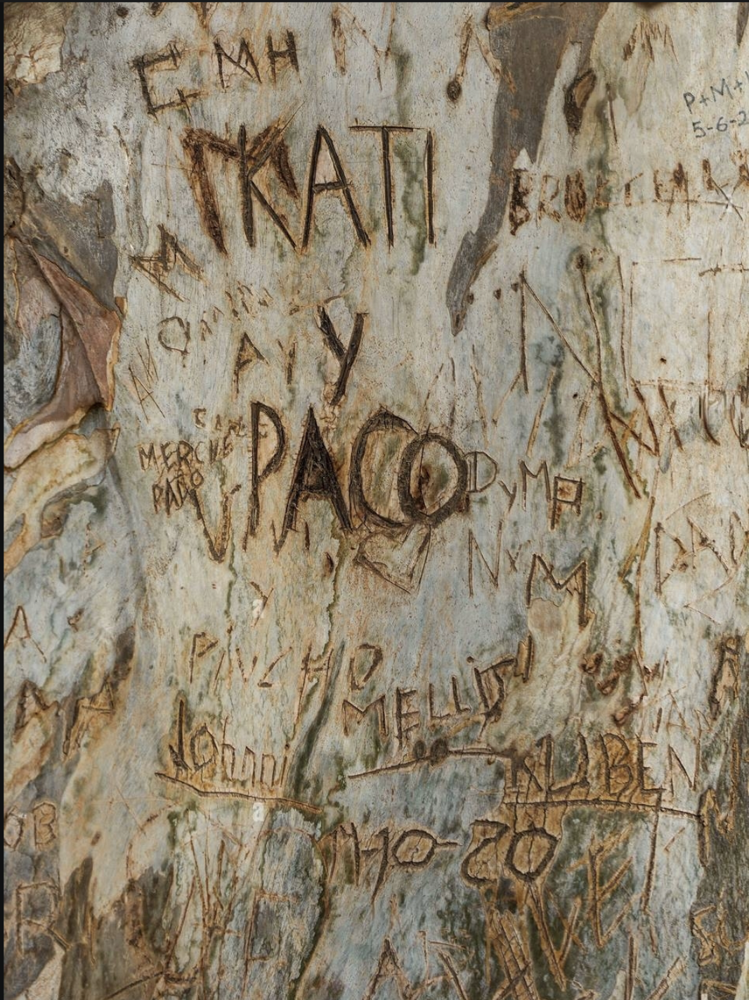

Welcome reader. I have gathered everything to know about graffiti and merged it into this beautiful website.
Here you will not only learn about the history and diffrent styles off graffiti, but also pick up some tips and tricks along the way.
Happy reading!
Introduction
Graffiti art refers to unauthorised markings of public spaces or buildings, by an indivudual or a group.
It started of being gang related, were members would mark their territory by tagging their pseudonym, but soon turned into an art form were artist express oneself.
Simple said graffiti is visual communication. It is usually word based but can have all kind of decorative elements, hence the diffrence between
graffiti and street art. Even tough graffiti exist over a thousands years, it only got its name during the late 1900s.
History
The term was first used by the novelist Norman Mailer when he wrote ‘The Faith of graffiti ‘ in 1974's.
Graffiti has a long history that dates back to the ancient Greeks and Romans.
These often had political slogans, love messages or popular quotes. The term is a collective name for decorated/plain text displayed on streets or public places that have been applied with some sort of paint or markers.
In the book Mailer writes about great artists like CAY 161 and LURK, trying to validate graffiti as an art form and not as vandalism.

The word graffiti originates from the Italian word ‘graffito’ (scratched) and the Greek word ‘graphein’ (to write.)
This is because the earliest graffiti was carved into walls and stones.